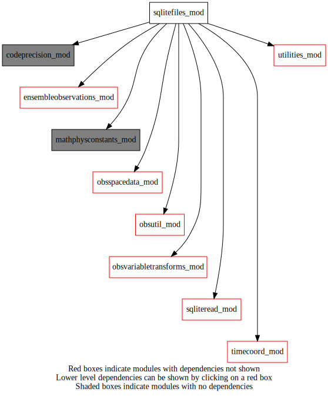
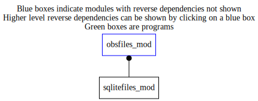

Dependency Diagrams:
 Direct Dependency Diagram¶
 Reverse Dependency Diagram¶
Description
MODULE sqliteFiles (prefix=’sqlf’ category=’3. Observation input/output’)
- Purpose
To store the filenames of the sqlite observation files and call subroutines in readSqlite to read and update sqlite files.
Quick access
- Routines
sqlf_addcloudparametersandemissivity(),sqlf_cleanfile(),sqlf_getdatestamp(),sqlf_readfile(),sqlf_updatefile()Needed modules
mathphysconstants_mod: MODULE MathPhysConstants_mod (prefix=’mpc’ category=’8. Low-level utilities and constants’)
sqliteread_mod: MODULE sqliteRead (prefix=’sqlr’ category=’3. Observation input/output’)
obsspacedata_mod: MODULE obsSpaceData_mod (prefix=’obs’ category=’6. High-level data objects’)
fsqlite
utilities_mod: MODULE utilities_mod (prefix=’utl’ category=’8. Low-level utilities and constants’)
codeprecision_mod: MODULE codePrecision_mod (prefix=’pre’ category=’8. Low-level utilities and constants’)
obsutil_mod: MODULE obsUtil_mod (prefix=’obsu’ category=’3. Observation input/output’)
obsvariabletransforms_mod: MODULE obsVariableTransforms_mod (prefix=’ovt’ category=’4. Data Object transformations’)
timecoord_mod: MODULE timeCoord (prefix=’tim’ category=’7. Low-level data objects’)
ensembleobservations_mod: MODULE ensembleObservations (prefix=’eob’ category=’6. High-level data objects’)Variables
Subroutines and functions
- subroutine sqlitefiles_mod/sqlf_getdatestamp(datestamp, sqlitefilename)¶
Purpose: get dateStamp from an SQLite file
- Arguments
datestamp [integer ,out]
sqlitefilename [character ,in]
- Called from
- Call to
- subroutine sqlitefiles_mod/sqlf_readfile(obsdat, filename, familytype, fileindex)¶
- Arguments
obsdat [struct_obs ,inout]
filename [character ]
familytype [character ]
fileindex [integer ]
- Called from
- Call to
obs_numbody(),obs_numheader(),sqlr_readsqlite(),sqlr_readsqlite_avhrr(),ovt_transformobsvalues(),ovt_adjusthumgz(),obsu_computevertcoordsurfobs(),obs_headset_i(),obs_setfamily(),obs_columnactive_rb(),obsu_setgbgpserror()
- subroutine sqlitefiles_mod/sqlf_updatefile(obsspacedata, filename, familytype, fileindex)¶
- Arguments
obsspacedata [struct_obs ,inout]
filename [character ]
familytype [character ]
fileindex [integer ]
- Called from
- Call to
utl_tmg_start(),sqlr_updatesqlite(),sqlr_insertsqlite(),utl_tmg_stop()
- subroutine sqlitefiles_mod/sqlf_cleanfile(filename, familytype)¶
- Purpose
to reduce the number of observation data in an SQLite file
- Arguments
filename [character ,in]
familytype [character ,in]
- Called from
- Call to
- subroutine sqlitefiles_mod/sqlf_addcloudparametersandemissivity(obsspacedata, fileindex, filename)¶
- Purpose
To insert cloud parameters in obsspace data into sqlite file
- Arguments
obsspacedata [struct_obs ,inout]
fileindex [integer ,in]
filename [character ,in]
- Called from
- Call to
{kind=link}
{kind=link}